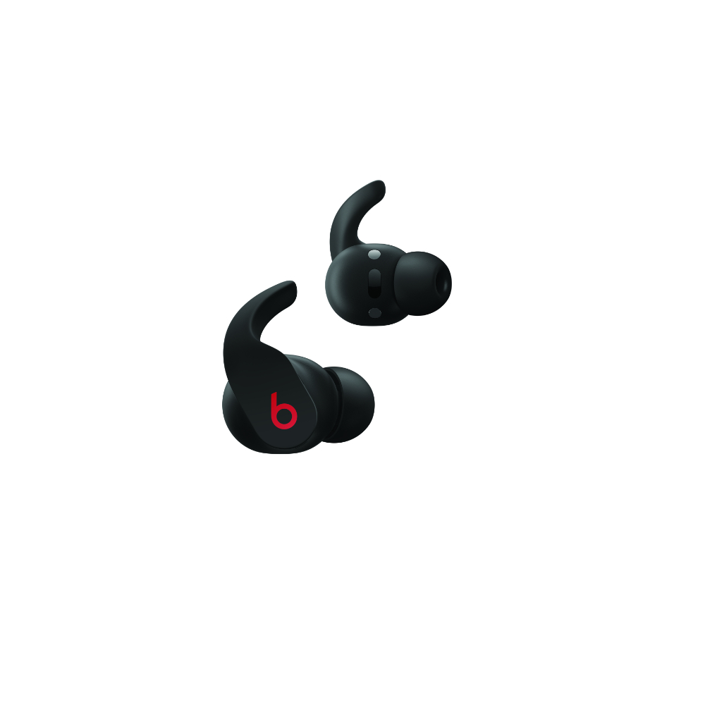

Beats Fit Pro True Wireless Earbuds
RM 899.00
Description
- Flexible, secure-fit wingtips for all-day comfort and stability
- Custom acoustic platform delivers powerful, balanced sound
- Spatial Audio with dynamic head tracking immerses you in music, movies, and games
- Active Noise Cancelling (ANC) dynamically adapts to your environment to block external noise
- Easily switch to Transparency mode to hear the world around you
- Enhanced by the Apple H1 chip for Automatic Switching between devices, Audio Sharing, and “Hey Siri”
- Sweat and water resistant (IPX4-rated) earbuds
- Up to 6 hours of listening time (up to 24 hours combined with charging case)
- High-quality call performance and voice assistant interaction via dual beamforming mics
- Industry-leading Class 1 Bluetooth® for extended range and fewer dropouts
- IOS Find My helps you locate your lost earbuds
- Matching, pocket-sized charging case with USB-C charging